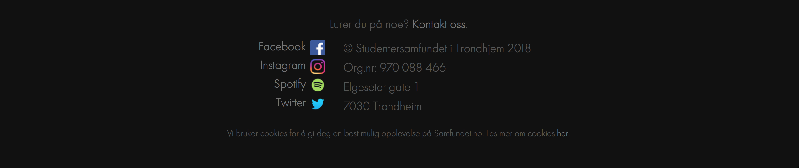
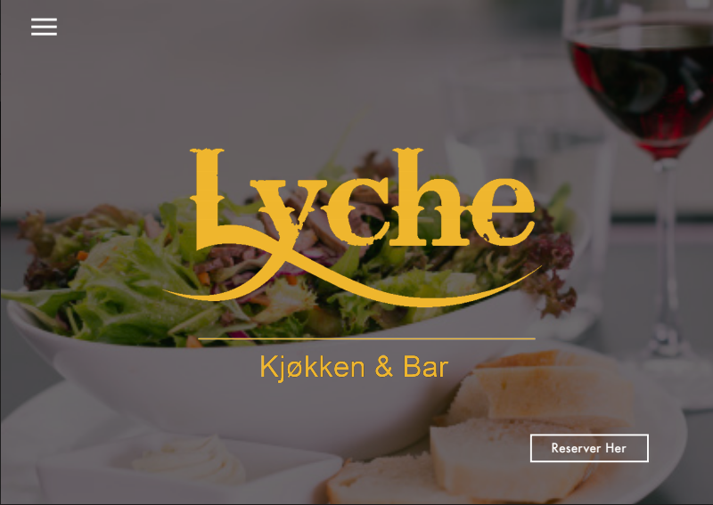
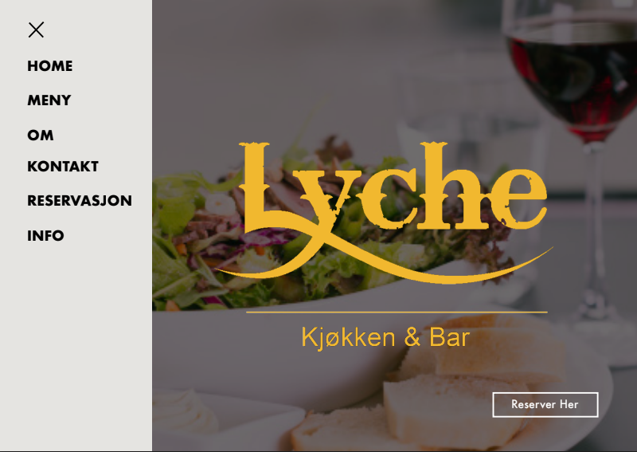
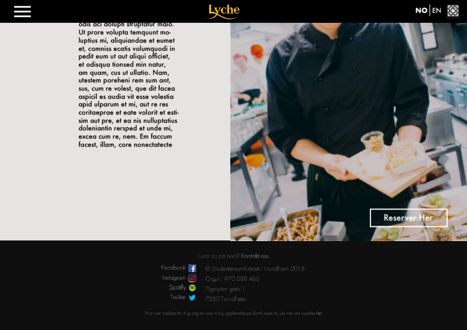
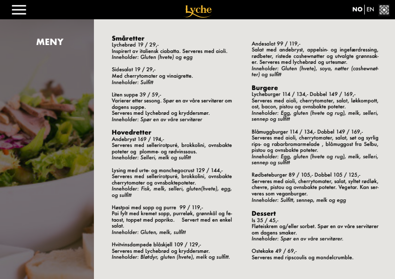
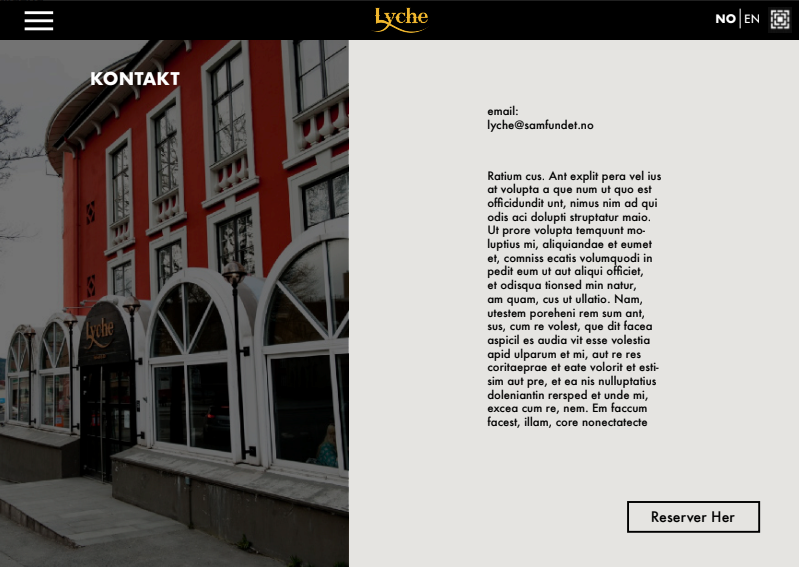
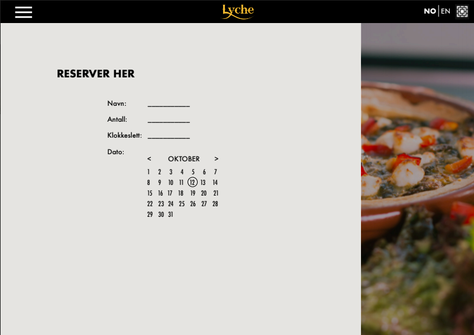
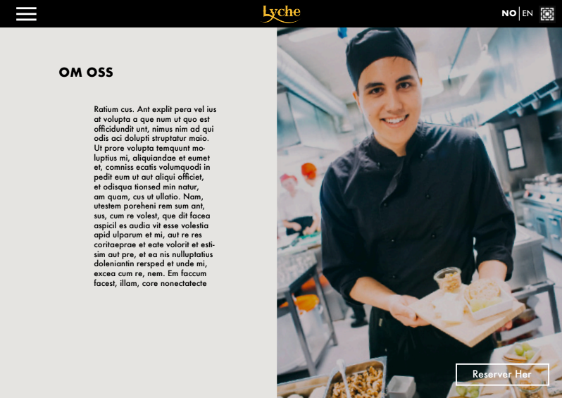

Document Details
P1 project requirements9. October 2018
Content
- Administrative details
- Purpose, goals and audience
- Navigation Structure
- Page layout and appearance
- Content
- Minimum requirement
- Plan
Administrative details
This webpage is made for the resturant Lyche.
The vision is to make the final location the site can be visited from at: lyche.samfundet.no.
The contact persons for this project is Merete Lunde Bertheau, the PR an Profile responsible for the restaurant together with Alexander Wang.
Purpose, goals and audience
The purpose with this website is to raise awerness to all students and people in Trondheim about the resturant Lyche you can find at Studentersamfundet. Our goal is to make it easy for everyone wisiting the site to see what Lyche has to offer; history of the restaurant, easy to get access to information about the menu the restaurant has to offer, possibilities for reservations and information about the staff.
The websites main audience will be people who are curious of either the history, concept or menu of Lyche restaurant. Lyche has something for everyone; vegetarian, international, hangover-cure burger and a drink or local brewed beer if you are thirsty. All of these are possible visitors of the website. The restaurant is student driven and the food is affordable, even on a small budget. Hence the websites target group are student.
Navigation Structure
The navigation structure of the website is shown in the figure below. The user will be able to access all the pages from the homepage, and the other way around; on every page you have the burger menu in the upper left-hand corner where you can navigate to the other pages. By clicking the Lyche logo you will also be redirected to the home page. By using the burger menu we present the user with an easy understandable conceptual model of the web page with the home page as a natural starting and unifying point. We also have the Samfundet logo in the upper right corner that will open a new table with Samfundet's homepage, and the other associated social media buttons in the footer.

Page layout and Appearance
The design will to an extent be in synch with the design and style samfundet.no has. But in addition we want to promote the vibe Lyche offers. The specific styling for the site applyed will be:
- Font type: Futura, size:
- Main title: 36px
- Navigation bar: 50px
- Body: 20 px
- Links: 20px
- Color Scheme
- Text: black
- Background: off-white(#ebe9e6), no background image
- Links: bold, grey-brown
- Body width: 100%
- Links: The appearance of the link will not be changed when they have been visited. When hovering over the link the color of the link will change.
- Navigation bar position and appearance: Will not be displayed when you have the picture on top of index.html in view, but at all other times. When the mouse hovers over the navigation bar and burger menu both the padding and text color will change.
- Favicon will be the same as samfundet.no
- Footer will be the same as samfundet.no and will appear in the bottom of the page when scrolling down. 
- Social icons bar in the footer
- Spotify
- Lyches logo will be seen in the navigation bar, always visible when scrolling down the page. When you press the logo you will be navigated to the index.html
- Samfundets logo will also always show in the right of the navigation bar, linking you to samfundet.no. This will open in a new page.
We will also take into consideration that people might have disabilities like bad vision, and will therefore try our best to use the WCAG guidlines for how to design web-pages that are easy to use for all.
Content
index.html
The first page that will appear when user visit webpage.
 - Navigation bar: a header line that will appear when you scroll the page
- Burger menu
- Lyche logo (img)
- NO|EN choice
- Samfundets logo directing you to samfundet.no
- Homepage-image with lyche name on. This will appear at first when getting onto the page, the navigation bar won’t show. This will fill entire screen.
- Menu part
- Short summary about the menu
- A picture of a course
- Each of these two will fill half the screen width
- About part
- A picture of someone working in lyche.
- A short summary about lyche.
- Each of these two will fill half the screen width, picture and text swop sides from the one above.
- Resevation part
- A picture of the returant
- A short text about reservation
- Each of these two will fill half the screen width, picture and text swop sides from the one above
- Contact and information part
- Some text about opening hours
- Email information
- Other medias to contact/pages that is Lyche
- Checks the date and time and shows if the resturant is open or not.
At the very bootom of the page there will also be a footer with some contact info.
menu.html
pdf/img/list with full menu.
contact.html
Page containing contact information, opening hours and social media.
reservations.html
Will contain a picture of the restaurant and a form til fill for reservations.
This form will contain:
- Name of person that makes reservation (*).
- Number of people. This number cannot exceed 20. (*)
- Date and time:
- Choose date from calender-menu.
- Choose from drop down menu. Each half hour from 16:00 to 21:30.
- E-post to person in charge of bookings.
- Information about how to cancel reservation.
about.html
Will contain a pictures of someone working in lyche, text about lyche and how it is today, text about lyches history.
styling.css
Styling sheet implemented on the entire website
This will contain the css for all of our pages, but individual styling for each page will be labeled by adding comments to the css.
Javascript
You can read more about these in the Minimum requirement section.
- lang.js
- reservation.js
- slideshow.js
- isOpen.js
- navbar.js
Minimum requirement
Some applications we want to include with JavaScript:
- lang.js
- Entire page change to norwegian/english when NO|EN buttons are clicked.
- reservation.js
- If compulsory fields in reservation fields are not filled, or there are invalid input, the form will not be sent and there will appear red text above the wrongly filled fields that tells the person making the reservation that they need to fill it in/that the input is invalid.
- slideshow.js
- Each time someone visits the webpage, a new photo will appare in the header. Every 30th second, a new image will appare.
-
isOpen.js
- Under information > opening hours, a JavaScript will be implemented. It will display "opening soon", if there is less than an hour until opening time, "open now" if the restaurant is open, and "closing soon" if there is less then an hour until it close.
- navbar.js
- When visiting the website, the user will first be shown a full window-sized picture (slideshow) with Lyches logo, and a burger menu in the top-left corner will show. When scrolling down, a navbar displaying a smaall logo, no|en, link to samfundet.no and the burger menu will appare. Will also deal with modularity to add to each page.
- footer.js
- Use modularity to add footer to each page.
We will also use some responsive design so that the page will be more adaptable.
Plan
We will be commited to the following Organization Scheme to see which files needs to be created, and the Work Division and Deadlines to keep track of different tasks needed to be done and to when.
Organizational Scheme
The following files will be stored at github where we will keep updating the project as we go.
- index.html
- menu.html
- contact.html
- reservations.html
- about.html
- styling.css
- Scripts
- lang.js
- reservation.js
- slideshow.js
- isOpen.js
- navbar.js
- Images
- There will be at least one imamge per page, which pictures will be used is not yet decided.
Work Division and Deadlines
| Filename | Description | In charge | Deadline |
|---|---|---|---|
| index.html | The first page that will appear when user visit the webpage | Helle og Helene | 18/10-2018 |
| menu.html | pdf/img/list with full menu | Merete | 18/10-2018 |
| contact.html | Contact information, opening hours, social media | Johanna | 18/10-2018 |
| reservations.html | A form to fill in for reservations containing name, date and time and also information about how to cancel the reservation | Andrea | 18/10-2018 |
| about.html | Pictures, the restaurants history, how it is to work at samfundet | Merete | 18/10-2018 |
| contact.html | Contact information, opening hours, social media | Johanna | 18/10-2018 |
| lang.js | A button to change language from norwegian | Helle | 1/11-2018 |
| slideshow.js | Random pictures appear each time the webpage is opened. In header? | Merete | 1/11-2018 |
| reservation.js | A form to fill out for reservation. Responds with “thanks for your reservation” when the form is correctly filled out. If the form is given an unvalid input, it will respond with “unvalid input” | Andrea | 1/11-2018 |
| isOpen.js | Displays whether the resturant is open or not, possibly how long it is until opening hours again. | Johanna | 1/11-2018 |
| navbar.js | navigation bar with the burger menu, logo og language switch will appare when the user is scrolling down. | Helene | 1/11-2018 |
| style.css | overall stylesheet | All | 1/11-2018 |
| Final controlls | Checking all the files for errors (html, javascript and CSS) | All | 8/11-2018 |